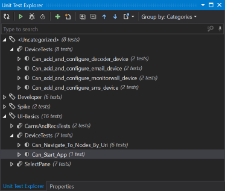

Good to know
XUnit
Categories, Trait
To group unit test in a way which makes sense for a project, the Attribute Trait is used. The following example puts the test method Can_Start_App under the category UI-Basics.
[Theory, Trait("Category", "UI-Basics")]
[InlineData(false)]
public void Can_Start_App(bool closeAppAfterRun)
ReSharper's Unit Test Explorer (Extensions > ReSharper > Windows > Unit Tests or Ctrl+Alt+U) shows the method then under category UI-Basics and belonging class:

InlineData and MemberData
XUnit allows the definition of multiple input values for a test. Such parametrizable tests needs to have the attribute Theory. Test without parameters are setup as Fact.
With InlineData the parameters of the text method are filled with the corresponding data of the InlineData definition:
[Theory]
[InlineData("1.1.1.1", DecoderType.BarcoMonitorWall)]
[InlineData("223.255.255.255", DecoderType.VideoJetDecoder7000)]
public void Can_add_and_configure_decoder_device(string deviceName, DecoderType decoderType)
With MemberData it is possible to extract the test-data provider for better readability:
[Theory]
[MemberData(nameof(Data))]
public void Can_switch_Panes(PaneTypeWithPaneName paneTypeWithPaneName)
{
...
public static IEnumerable<object[]> Data =>
new List<object[]>
{
new object[] { new PaneTypeWithPaneName(...) },
new object[] { new PaneTypeWithPaneName(...) },
...